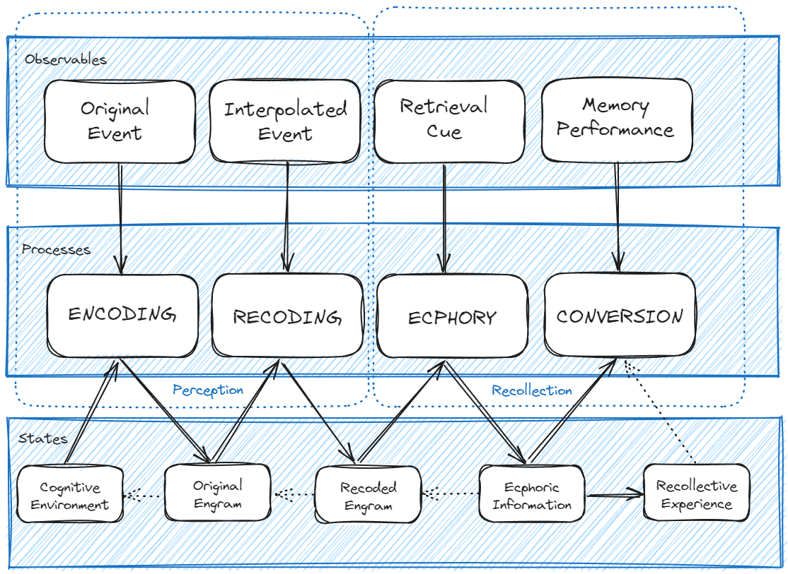
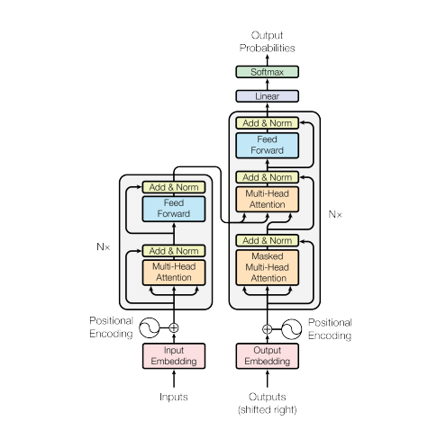

Memory GAPS: Would LLM pass the Tulving Test?
Abstract
Introduction
In his groundbreaking studies of memory, Endel Tulving (1927-2023) noted that “one of the most compelling and salient characteristics of remembering of past events is the individual’s subjective awareness of remembering” [1]. In order to include the rememberer’s recollective experience into the critical constructs in the conceptualization of remembering, Tulving suggested an “overall pretheoretical framework”, called the General Abstract Processing System or GAPS. This paper investigates whether the GAPS also provides insights when the subject is no longer human but a Large Language Model (LLM).
Tulving championed the distinction of episodic from semantic memory, successfully arguing that being functionally different, they represent separate but related systems. Both are placed on the same side of the cognitive division between declarative memory (as episodic and semantic information can be expressed through language–e.g. repairing a bicycle) on the one hand, and skills (which can be observed only in behavior–e.g. riding a bicycle) on the other.
The GAPS and the Transformer
In Tulving’s framework, a single act of remembering forms the unit of human episodic memory. Remembering is a process that begins with the witnessing or experiencing of an episode and ends with its recollective experience or with the conversion of the remembered information into some other form, or both. The GAPS specifies so called elements of remembering and their interrelations in order to decompose this process.
The GAPS distinguishes two kinds of elements: observable events and hypothetical constructs (processes and states); and it divides elements into two categories: elements of encoding and elements of retrieval.

Figure 1: The GAPS: Elements of Episodic Memory and their Relations. The element of encoding is a process that converts the information about an experienced event or episode (in a particular setting, at a particular time) into an engram or memory trace. The central element of the retrieval processes ecphoric information, a synergistic product of the engram and the retrieval cue, which calls on both episodic and semantic information. Source for figure: Ch. 7, [1, 7-1, p. 135].
Of particular interest to this study of applicability of the GAPS framework to LLM are the possible transpositions of engram and ecphoric information into the domain of generative AI. In his seminal book, Tulving offers a very broad definition of engrams: “the product of encoding”, “conditions for recollection of the experienced event”, or “differences between the state of the memory system before and after encoding”. The latter is closely related the original definitions of these terms introduced by Richard Semon (1859–1918): “to represent the enduring changes brought about by the energetic effect of stimuli in the organism” [2], [3]. Note that if, in both clarifications, the nature of the changes are unknown, the term became nonetheless broadly known in psychology research through the later work of Karl Lashley (1890–1958) concluding, amongst other experimental results on neural mechanisms involved in learning and memory, that “there is no demonstrable localization of memory trace” [4].
Similarly inspired by Semon, Tulving suggested the terms ecphory and ecphoric information to designate respectively the process that brings (i) the relevant information in the retrieval environment into interaction with (ii) the original or recoded engram, and the output of this process. Such ecphoric information determines the particulars of recollective experience in the next phase of remembering: conversion. In the GAPS model, ecphoric information is basically a task-free component of the retrieval process, it is simply used by being converted into another form in the memory performance.
The categories of encoding and retrieval in the GAPS are not without analogies with the Transformer architecture of neural networks at the core of LLMs, which precisely articulates encoders and decoders to process vector embeddings representing words and sentences.

Figure 2: The Transformer Architecture. Based on the 2017 paper [5] attention mechanism, the Transformer architecture requires less training time than previous recurrent neural architectures. Input text is split into tokens (sometimes called n-gram, dangerously reminiscent of Semon’s engrams–see text), then converted into vectors. Through different layers, each token is contextualized with other tokens via parallel attention heads, calculating weights for each according to its importance. The Transformer Architecture elaborates on softmax-based attention mechanism [6] and Fast Weight Controllers [7]. Source for figure: [5].
At this stage, from cursorily reviewing the architecture of both GAPS and Transformer–and keeping in mind that Tulving’s psychological framework is only “pre-theoretical” and “highly schematic”, while Transformers are actual computer implementations–the practical analogy would unfold as follows:
| GAPS | Transformer | |
|---|---|---|
| Processes | encoding | encoder |
| recoding | encoder | |
| ecphory | encoder | |
| conversion | decoder | |
| States | engram | vector embedding |
| ecphoric information | output probabilities | |
| memory performance | output |
Tulving’s “direct comparison”: recognition versus recall
In order to further investigate the analogy and its grounds, we adopt Tulving’s design of “direct comparison” experiments to assess recognition versus recall tasks in LLMs. Recognition and recall are both processes of retrieval and both result in the rememberer’s awareness of a past event. The simple episodes in the experiment are to be presentations of a list of English words to be remembered. In this simplified situation of comparing recognition and recall tasks, we consider only two independent dimensions: one has to do with the type of retrieval information, or cue, available to the rememberer; the second refers to the conversion process in the GAPS framework. The retrieval information includes copies of the studied words and non-copy cue words. As for the conversion process: in the recognition task, the rememberer has to express whether or not the cue word was in the study list (familiarity); in the recall task, the rememberer has to identify a word in the study list, if any, associated with the cue word (identification), thereby expressing some other aspect of the original memorizing experience. Note that in the GAPS framework, the first dimension involves processes anterior to the construction of ecphoric information, while the second relates to post-ecphoric processes. The experimental results are therefore captured by the 2 x 2 matrix in Table 2
| Retrieval information | Conversion | |
|---|---|---|
| Familiarity | Identification | |
| Copy Cue Word | Recognition | ? |
| Non-Copy Cue Word | ? | Recall |
Conventional recognition and recall tests sit in two of the four cells in the matrix. When the rememberer, however, declares a cue other than a copy cue word to be familiar it is a false positive response from the conventional perspective although psychologists might disagree on how to think about such responses [8]. The other empty cell represents a situation where the rememberer’s somewhat strange task is to repeat the cue word to confirm it is associated with the copy in the study list. False negatives are of interest here and Tulving’s interpretation was that these entailed a form of continuity between recognition and recall retrieval processes.
The direct comparison test design represents all four cells of the matrix. In a typical session the LLM is prompted to memorize a list of 48 common english words. In a group of experiments, the LLM is prompted with a cue word and asked whether the cue is included or not in the studied list; in another group, the LLM is prompted with a cue word and asked to retrieve any strongly associated word in the studied list (or none if no such word is evoked by the cue).
In each experiment 32 cue words are presented in the 32 prompts: eight of these cue words were identical with eight words in the list (copy cues), eight were strongly associated words (non-copy associated cues), eight were rhyming words (non copy rhymes cues), and eight were unrelated distractors (non-copy unrelated cues). The 32 cue words are identical for both the recognition and the recall task.
In order to introduce the distinction between immediate and delayed retrieval of the original experimental design, the experiment is run twice for each group: in the first run, memorization and retrieval are both in each individual prompt (immediate); in the second, memorization is the first prompt of a conversation (chat) with the LLM, followed by retrieval prompts which continue the conversation (delayed).
Results
As a reference benchmark, the results of Tulving’s original experiments are presented in Table 3 from Ch. [1, p. 14, Table 14.2]:
| Retrieval information | Conversion | |||
|---|---|---|---|---|
| Familiarity | Identification | |||
| Immediate | Delayed | Immediate | Delayed | |
| Copy Cue Word | 0.78 | 0.71 | 0.69 | 0.60 |
| Non-Copy Associated | 0.15 | 0.20 | 0.54 | 0.37 |
| Non-copy Rhyme | 0.09 | 0.15 | 0.20 | 0.31 |
| Non-copy Unrelated | 0.08 | 0.18 | 0.04 | 0.02 |
The memory performance of LLMs in the Tulving Test of direct comparison is presented along the same format in Table 4.
| Retrieval information | Conversion | |||
|---|---|---|---|---|
| Familiarity | Identification | |||
| Immediate | Delayed | Immediate | Delayed | |
| Copy Cue Word | 1 | 0.46 | 0.46 | 0 |
| Non-Copy Associated | 0 | 0.47 | 0.49 | 0 |
| Non-copy Rhyme | 0 | 0.50 | 0.18 | 0 |
| Non-copy Unrelated | 0 | 0.41 | 0.08 | 0 |
Within each result table, several comparisons are of interest. First the probability that copy cues were familiar was higher than the probability of identification and production of the target word in response to the copy cue, in both the human (Table 3) and the LLM (Table 4) subject–here mistral-7b-instruct-v0. Second, the probability that extra-list unrelated cues were (incorrectly) recognized as members of the memorized list increased from the immediate to delayed test, in both human and LLM subjects. Remarkably and contrasting with the human subject, in the immediate recognition task the LLM never erred: no false positives for non-copy cues and 100% familiarity for copy cues. Third, rhyme words proved in both cases more effective than unrelated distractor cues in recall. Fourth, strongly associated cues were considered members of the list with much higher probability in the immediate test, the difference being greatly reduced in the delayed test. The case of the LLM subject varies a bit, since no false positives are produced in the immediate recognition test, while they appear with similar probabilities in the delayed recognition test.
Stating the obvious when comparing the two tables: firts, the LLM performs immediate recognition faultlessly, while displaying much weaker performance than the human subject on the delayed recognition: lower probability on copy cues, and significantly higher probabilities of false positives (judging non copy cues to be included in the list). Second, in the immediate recall task the LLM memory performance is weaker than in the human subject, more so for copy cues than for associate and unrelated cues–which seems paradoxical given the perfect match in the recognition task. The LLM, however, fails miserably on the delayed identification task, unable to recall any word in the list whatever the cued prompt. The discussion section looks into the context length and so-called hallucination phenomena as a possible cause for this last observation.
Discussion
Compare to Estes’ short/long-term memomy in human and computer discussion [9].
By contrast, the results of research in my laboratory (Estes 1972; Lee and Estes 1977) suggest that human short-term memory is quite differ ently organized, being oriented toward events and their* attributes rather than toward the retention of items as units. In the human memory, forgetting is characteristically a pro gressive loss of precision of informa tion about an event rather than a matter of total recall or total loss of a stored item.
Methods
We transpose the direct comparison experiment, between recognition and recall, described in [1, 14] to LLM subjects.
Individual experiments are programmed as Python scripts interacting with LLMs through the LLM CLI utility and library [10] (Python 3.11.8 on Windows 10). Results presented and discussed in this paper were obtained with mistral-7b-instruct-v0 [11]. (Results with smaller models, e.g. orca-mini-3b [12], were not reliable enough.)
48 simple english words were selected manually to constitute the study list of to-be-remembered words. Firstly, 48 associate cue words were selected from three sources: (i) prompting the LLM for one strongly associated word to each of the 48 to-be-remembered words, (ii) synonyms of each of the 48 words, and (iii) antonyms of each of the 48 words. Antonyms and synonyms were obtained using the Natural Language Toolkit [13]. Secondly, 48 rhyme cue words were obtained using the CMU Pronouncing Directory [14]. Finally, 16 unrelated english words were picked up manually to act as distractors. The 48-row by 3-column table of target word, associate cue word, rhyme cue words together with the list of 16 distractors is the product of these initial preparation scripts.
Each session is made of two tests, one on the recognition task (familiarity), the other on the recall task (identification). Each test lists 32 cue words submitted to the LLM for remembering either (i) if the cue word is included in the study list, for recognition, or (ii) a word in the study list evoked by the cue word, or “none” (recall). The 32 cue words are grouped into 8 copy cues, 8 associate cues, 8 rhyme cues and 8 unrelated cues. Both the order of the 32 cues and the selection of cue types are randomized before running each session.
The recognition and recall 32-word tests are run twice to differentiate immediate from delayed performance. In immediate tests, each individual prompt to the LLM contains the list of 48 words to be remembered before the cue word. In delayed test, each test is a chat beginning with the first instruction to memorize the list of 48 words, preceding a series of individual prompts for each cue word, all within the same chat.
Each response of the LLM is analysed and two counts are updated for the presence of the target word in the response, and for the presence of any word in the study list. (Note that the second count deliberately includes false positives in the recognition task with non-copy cues.)